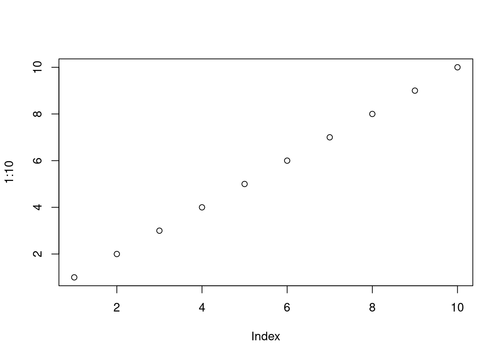

2.1 Instalação do R e RStudio
A interação do usuário com o  é por meio da linha de comando. A
interface da linha de comando tem suas vantagens, mas você será mais produtivo
com o uso de uma Interface de Desenvolvimento Integrado (IDE) como o RStudio Desktop.
é por meio da linha de comando. A
interface da linha de comando tem suas vantagens, mas você será mais produtivo
com o uso de uma Interface de Desenvolvimento Integrado (IDE) como o RStudio Desktop.
A seguir veremos como:
instalar o
 nos SO Windows e Linux Ubuntu
nos SO Windows e Linux Ubuntumanter o
sempre atualizado no Linux Ubuntuconfigurar um diretório para armazenar os pacotes do R instalados
instalar pacotes
instalar o RStudio Desktop
Neste livro, o maior foco na instalação do  é dada para o SO Linux Ubuntu, pelo fato de assim como o R,
ser um software livre e de código aberto. Como o Linux Ubuntu é baseado no Debian o procedimento de instalação
também se estende a essa distribuição Linux e as versões derivadas do Ubuntu oficialmente reconhecidas.
é dada para o SO Linux Ubuntu, pelo fato de assim como o R,
ser um software livre e de código aberto. Como o Linux Ubuntu é baseado no Debian o procedimento de instalação
também se estende a essa distribuição Linux e as versões derivadas do Ubuntu oficialmente reconhecidas.
A instalação no SO Windows é igual a instalação de qualquer outro software e pode ser facilmente encontrada na internet. Por esta razão, somente indicou-se o caminho de instalação.
2.1.1 Instalando o R
O  pode ser instalado a partir dos binários pré-compilados ou do código fonte. Nós veremos a instalação do
pode ser instalado a partir dos binários pré-compilados ou do código fonte. Nós veremos a instalação do  a partir dos arquivos binários.
a partir dos arquivos binários.
2.1.1.1 Windows
O binário executável do  para o Windows está disponível na Rede Abrangente de Arquivos do
para o Windows está disponível na Rede Abrangente de Arquivos do  (CRAN) e
pode ser baixado aqui.
(CRAN) e
pode ser baixado aqui.
Abra o executável e siga instruções de instalação mantendo todas as opções padrões.
No Windows a instalação do  inclui uma Interface Gráfica do Usuário
(GUI) acessível pelo executável
inclui uma Interface Gráfica do Usuário
(GUI) acessível pelo executável RGui.exe (Figura 2.1). Um atalho para esse executável é gerado por default na área de trabalho com o símbolo
do  .
.

Figura 2.1: Interface gráfica do usuário no R para Windows.
Para instalar pacotes de plataformas diferentes da CRAN (veja seção 2.2.1.2) é necessário instalar o programa Rtools,
selecionando a versão adequada para sua versão do  .
.
2.1.1.1.1 Atualização do R no Windows
Novas versões do R são disponibilizadas em geral com frequência de 5 vezes por ano. Recomenda-se manter o R atualizado, pois as novas versões incluem aperfeiçoamentos e a correção de bugs.
As novas versões do  vem com os pacotes padrões do R. Os demais pacotes instalados pelo usuário na versão anterior precisam ser reinstalados.
vem com os pacotes padrões do R. Os demais pacotes instalados pelo usuário na versão anterior precisam ser reinstalados.
Para atualizar o  no Windows, ao invés de baixar o executável a
cada nova versão e repetir o processo da seção anterior, você pode utilizar o pacote installr, usando o código abaixo e seguindo as instruções da interface.
no Windows, ao invés de baixar o executável a
cada nova versão e repetir o processo da seção anterior, você pode utilizar o pacote installr, usando o código abaixo e seguindo as instruções da interface.
Em seguida, atualize os atalhos do  de sua área trabalho ou da barra de tarefas para o caminho da versão do R. Ao abrir a nova versão verifique a versão instalada com:
de sua área trabalho ou da barra de tarefas para o caminho da versão do R. Ao abrir a nova versão verifique a versão instalada com:
O próximo passo é atualizar os pacotes para a nova versão que será visto na seção 2.2.2.
2.1.1.2 Linux
2.1.1.2.1 Ubuntu
Há várias formas de instalar o  no Ubuntu. Mas primeiro, caso você
tenha alguma versão antiga do R, desinstale-a com:
no Ubuntu. Mas primeiro, caso você
tenha alguma versão antiga do R, desinstale-a com:
A forma mais fácil de instalar o  é usar a versão compilada no
repositório default do Ubuntu.
é usar a versão compilada no
repositório default do Ubuntu.
Entretanto, como o R é um projeto de evolução rápida, a versão estável mais recente4 não está disponível nos repositórios do Ubuntu. Dessa forma, não conseguimos usufruir dos pacotes mais recentes
(ou em desenvolvimento), que geralmente incluem o estado da arte da ciência de dados. Por esta razão, vamos instalar a última versão do  e de forma
que seja atualizado automaticamente pelo sistema. Isto pode ser feito com os comandos a seguir.
e de forma
que seja atualizado automaticamente pelo sistema. Isto pode ser feito com os comandos a seguir.
$ sudo touch /etc/apt/sources.list.d/cran.list
$ sudo sh -c "echo 'deb https://cloud.r-project.org/bin/linux/ubuntu `lsb_release -sc`-cran40/' >> /etc/apt/sources.list.d/cran.list" - Adicionamos a chave de autenticação7 do repositório.
$ sudo apt-key adv --keyserver keyserver.ubuntu.com --recv-keys E298A3A825C0D65DFD57CBB651716619E084DAB9- Atualizamos a lista de repositórios do sistema.
- Instalamos o R
Para iniciar o  no Linux, digite
no Linux, digite R no cursor do terminal:
$ RA partir desse momento já começamos uma sessão no  . Vamos simplesmente plotar uma sequência numérica.
. Vamos simplesmente plotar uma sequência numérica.

Após este teste, podemos sair do  , sem salvar os dados da seção, com a expressão abaixo:
, sem salvar os dados da seção, com a expressão abaixo:
2.1.1.3 Diretório para pacotes instalados pelo usuário
Os pacotes que vem com os pacotes r-base e r-recommended são instalados no diretório /usr/lib/R/library. Estes pacotes são atualizados pelo sistema8 ou usando sudo apt-get update && sudo apt-get upgrade.
Uma boa prática para os pacotes R instalados pelo usuário é definir um diretório específico. Isso lhe dá mais controle sobre os pacotes do  instalados no sistema. Um local sugerido é o
instalados no sistema. Um local sugerido é o /home/usuario/.R/libs. O seu home ou pasta pessoal pode ser obtido com o comando echo $HOME. Para criar o diretório você pode digitar o comando abaixo:
Para informar ao  onde procurar os pacotes instalados, você precisa criar um arquivo chamado
onde procurar os pacotes instalados, você precisa criar um arquivo chamado .Renviron, no diretório $HOME, contendo a expressão R_LIBS=/home/usuario/.R/libs/. Você pode fazer isso em um terminal com os comandos:
Esse caminho fica então visível ao  , o que pode ser verificado executando a função
, o que pode ser verificado executando a função .libPaths() na linha de comando do  .
.
Abra o  :
:
e ao digitar:
> .libPaths()
[1] "C:/Users/bitev/Documents/R/win-library/4.0"
[2] "C:/Program Files/R/R-4.0.3/library" o seu diretório /home/usuario/.R/libs9 deve aparecer em primeiro lugar. Indicando que este local tem prioridade para instalação dos pacotes. Caso o diretório deixe de existir os diretórios seguintes serão usados.
A versão mais atual no período de elaboração deste texto foi a R 4.0.3.↩︎
Usando https://cloud.r-project.org automaticamente redireciona para o espelho da CRAN mais próximo. A lista de espelhos atual encontra-se em https://cran.r-project.org/mirrors.html.↩︎
A execução destes comandos requer privilégios de superusuário. Caso não tenha, consulte o administrador do sistema.↩︎
Chave pública de autenticação é um meio alternativo de se logar em um servidor ao invés de digitar uma senha. É uma forma mais segura e flexível, mas mais difícil de ser configurada. Esse meio alternativo de fazer login é importante se o computador está visível na internet. Para saber mais veja aqui.↩︎
Por ser atualizado automaticamente pelo sistema, às vezes o usuário nem percebe que a versão do R mudou.↩︎
Diretórios precedidos por “.” no Linux são diretórios ocultos. O diretório
/home/usuario/.Ré um diretório oculto, para visualizá-lo no Ubuntu, na interface gráfica do sistema, acesse View > Show Hidden Files (ou Visualizar > Mostrar arquivos ocultos). No terminal utilizels -apara listar os arquivos ocultos.↩︎